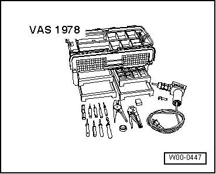
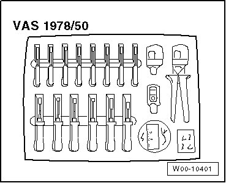
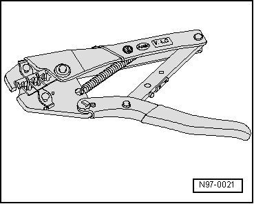
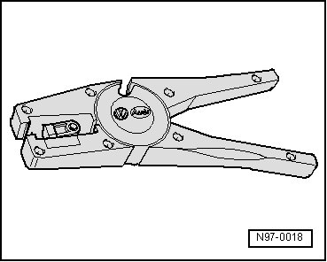
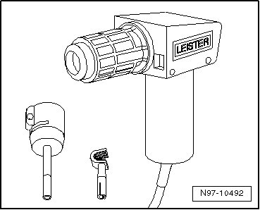
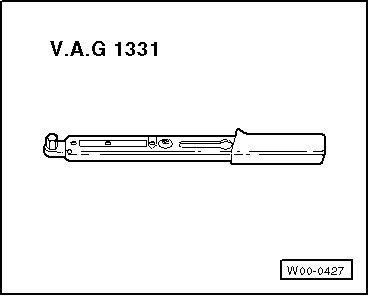
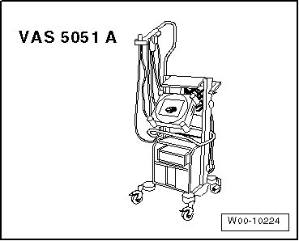
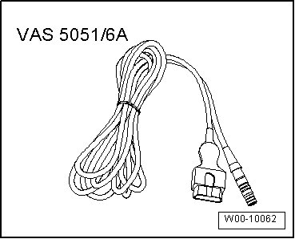

Electrical Equipment - General Information
Special Tools
Special tools, testers and auxiliary items required
• Wiring Harness Repair Kit (VAS 1978)

• Upgrade Kit (VAS 1978/50)

• Crimping Pliers without Insert (VAS 1978/1)

• Wire Stripper (VAS 1978/3)

• Hot Air Gun, 220 V/ 50 Hz (VAS 1978/14)

• Torque Wrench (VAG 1331)

• Vehicle Tester

• Diagnostic Cable (VAS 5051/6A) (5 m)

• Diagnostic Cable (VAS 5051/5A) (3 m)